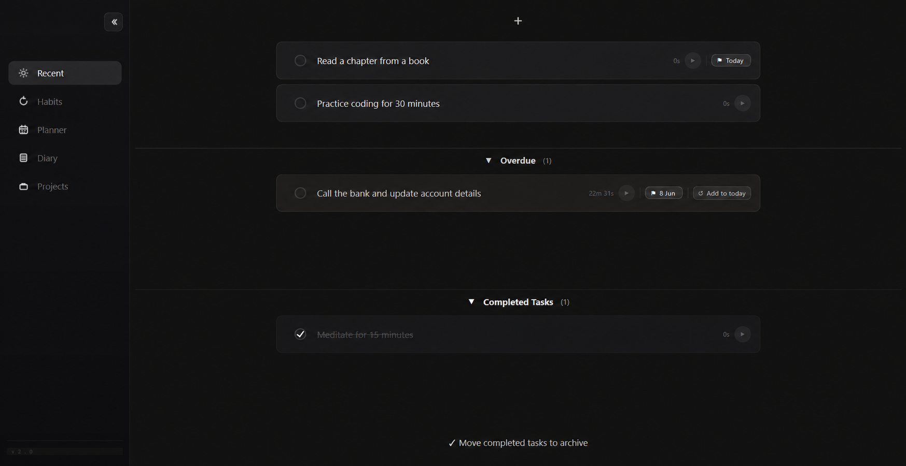
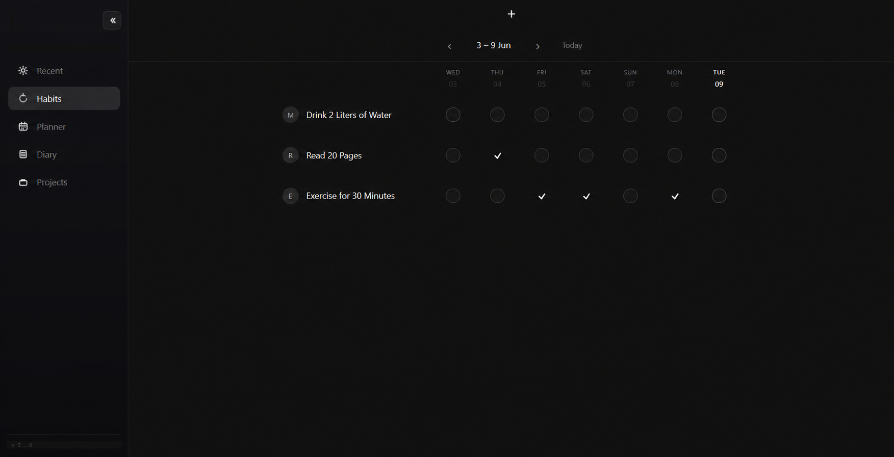
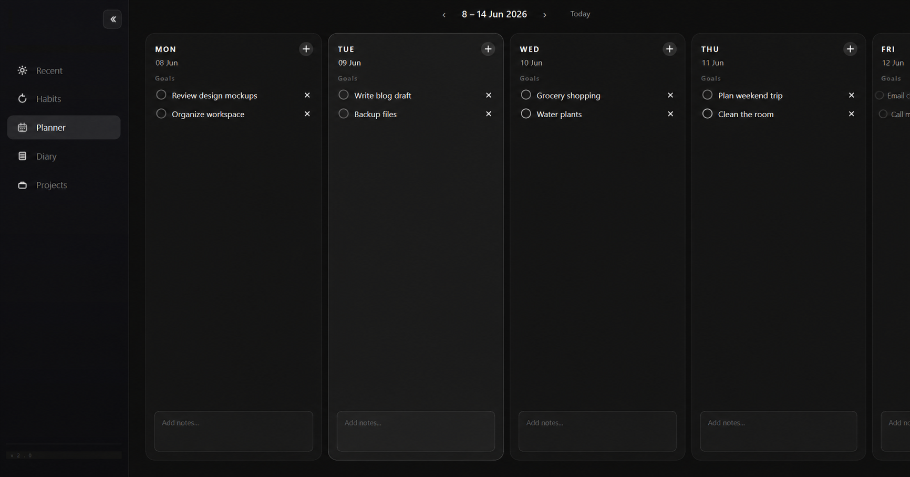
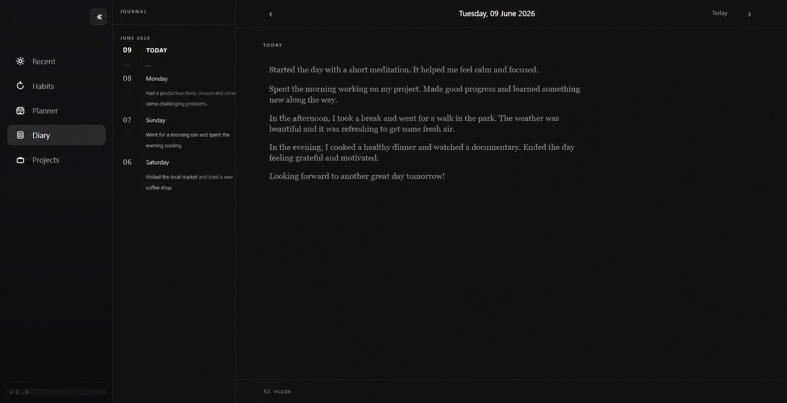

A beautiful, local-first desktop suite. Manage habits, tasks, projects, and your personal diary seamlessly on your machine.

Build and maintain positive habits with an intuitive, visual tracker that keeps you motivated every day.
Organize your daily schedule and to-do lists effectively with powerful scheduling and prioritization tools.
Break down your largest goals into manageable projects and sub-tasks to ensure steady progress over time.
Keep a secure, completely local journal for your daily thoughts, reflections, and deep work logs.


